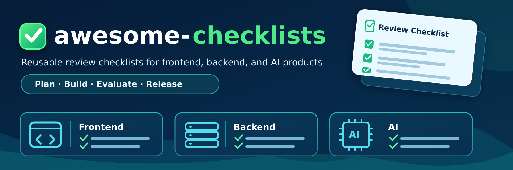

Awesome Checklists#

Build with intention. Review with evidence. Launch with fewer blind spots.
A practical collection of reusable checklists for planning, building, evaluating, and releasing software—from frontend and backend systems to AI-powered products.
91 scoped checklists · 4,190 unique checks · 4 complementary review scopes
Great products are rarely derailed by one spectacular mistake. More often, the problems are questions nobody asked, assumptions nobody tested, and responsibilities nobody owned.
Awesome Checklists helps teams ask those questions before they become expensive surprises. Use it to turn vague readiness discussions into structured, evidence-based reviews—without reinventing a process for every project.
Agent skill for Codex and Claude Code#
Use these checklists directly in your coding agent. The awesome-checklists agent skill teaches Codex, Claude Code, and other Agent Skills-compatible tools to choose relevant reviews, retrieve current checklist criteria, inspect real project evidence, and report actionable findings with stable IDs.
From the project you want to review, install the skill using the Skills CLI:
npx skills add https://github.com/Pro-GenAI/awesome-checklists --skill awesome-checklists -a codex -a claude-code
To install for just one agent, use -a codex or -a claude-code; add -g for a global installation. Discover the packaged skill without installing it with npx skills add Pro-GenAI/awesome-checklists --list. The CLI requires a supported Node.js release (currently Node.js 22.20+).
Private repository access: This repository is currently private. Installation and the skill's on-demand checklist retrieval require GitHub access. Authenticate with
gh auth login, configured Git credentials, or SSH. An SSH source is also supported:npx skills add git@github.com:Pro-GenAI/awesome-checklists.git. If the repo becomes public, these authentication requirements change.
After installation, ask an agent: “Review this app's release readiness using awesome-checklists; cite actual checklist IDs and evidence for each finding.” Other examples: “Audit our API security and database controls,” or “Assess this RAG/agent implementation for evaluation and guardrail gaps.”
The skill includes a standard-library checklist fetch helper, a domain selection guide, and offline smoke tests. It does not copy or claim to certify all checks; it loads relevant upstream files when accessible.
Why use this repository?#
- Spot blind spots earlier. Surface overlooked requirements, security risks, accessibility gaps, operational dependencies, and AI-specific failure modes.
- Make reviews actionable. Checks are written to prompt verification, not just agreement. Record evidence, ownership, exceptions, and follow-up work in your project's review records.
- Create a shared language. Stable checklist IDs make it easier to discuss findings across engineering, product, QA, security, and operations.
- Start wherever you are. Use relevant checks during discovery, implementation, release review, or post-launch changes—not only on launch day.
- Adapt to your context. Choose the scopes and checks that matter for your product, rather than treating every item as mandatory.
Explore the checklists#
All 91 numbered checklist files live in lists/: shared checklists directly in lists/, and the other scopes in lists/frontend/, lists/backend/, and lists/AI/. The repository separates shared concerns from implementation-specific checks so that each review can focus on the right work. AI-specific interface checks (including fine-tuning dashboards and agent interfaces) live under lists/AI/ in their domain's Frontend Checks section, rather than as separate AI-domain files under lists/frontend/. General frontend checks remain under lists/frontend/.
| Scope | Files | Checks | What it covers |
|---|---|---|---|
| Shared / cross-cutting | 14 | 682 | Planning, legal considerations, architecture, security, testing, reliability, operations, metrics, and launch decisions |
| Frontend | 20 | 684 | UI/UX, accessibility, browser/API integration, performance, SEO, operations, and release checks |
| Backend | 35 | 1,117 | APIs, data management, services, infrastructure, security, operations, and applicable AI integrations |
| AI | 22 | 1,707 | Model selection, training, RAG, agents, evaluation, guardrails, monitoring, and their AI-specific frontend integration checks |
| Total | 91 | 4,190 |
Counts reflect the repository's current inventory and may change as checklists evolve. Numbered filenames indicate the recommended order within each folder under lists/; numbers are not shared identifiers across folders.
Good places to start#
| If you're working on… | Open these checklists |
|---|---|
| A new project | Requirements & planning · Architecture & code quality |
| A product or release review | Security · Testing · Release & launch readiness |
| A user-facing application | Frontend UX & usability · Accessibility |
| An API or data platform | Backend API design · Data & database management |
| An AI-powered product | AI evaluation & governance · RAG & knowledge bases · Agents & tool orchestration |
Browse the complete lists/frontend/, lists/backend/, and lists/AI/ directories, or use AGENTS.md for the detailed domain inventory, stable ID conventions, and maintenance guidance.
Optional SEO redesign worksheet: Website redesign URL-map template offers an old-to-new mapping and verification example for project-specific site migrations; it is not a checklist or a guarantee against ranking changes.
Source provenance: External source-coverage audit records prior reviews, limitations, and why source suggestions were adopted or excluded. It is not a numbered checklist.
How to use these checklists#
- Select the relevant scopes. Start with applicable shared checks, then add frontend, backend, and/or AI checklists based on the actual components and risks of your project. Not every folder applies to every project.
- Create project-specific copies. Keep the reusable templates in this repository unchecked. Record the product, release, environment, reviewers, date, and review decision in your own copies.
- Verify—don't assume. Mark
[x]only when a check has actually passed and supporting evidence has been recorded in your project's review notes, test artifacts, or issue tracker. - Explain exceptions. Keep failed or pending checks open. Document
N/Awith a reason, and track material issues or accepted risks with owners, deadlines, and the relevant stable checklist IDs. - Review the release gates. Evaluate each domain's release gate across all applicable scope files, with appropriate human approval. A repeated gate is not a separate approval.
- Revisit after meaningful changes. New features, vendors, models, policies, markets, deployments, or incidents can invalidate yesterday's assumptions.
A checked box should mean “we verified this,” not “we hope this is fine.”
Display the “Reviewed with awesome-checklists” badge#
Projects that have actually carried out and documented an applicable awesome-checklists review can display a voluntary, self-declared badge in their own README. The larger badge includes a checkmark to indicate a checklist-based review—not approval, certification, or a verified passing result:
Copy this Markdown into your project's README (no badge hosting required):
[](https://github.com/Pro-GenAI/awesome-checklists)
For a larger, 44 px-high badge with a prominent checkmark and more readable text, you can instead copy the custom SVG badge to assets/reviewed-with-awesome-checklists.svg and use:

[](https://github.com/Pro-GenAI/awesome-checklists)
The copy-and-host option is useful when you do not want a dependency on Shields.io. Because this source repository is currently private, do not hotlink directly to its raw GitHub SVG from a public README; the public Shields.io URL above remains displayable without access to this repository.
[!IMPORTANT] This is a maintainer's self-declaration of having used the checklists, not an approval issued by Pro-GenAI or an independent audit. The badge does not certify security, compliance, accessibility, AI safety, or release readiness. Display it only after relevant checks were evaluated and results, outstanding risks, and exceptions were documented. Include a link to the project's own review summary where appropriate, and update or remove the badge if its basis is no longer current.
Important: a reference, not the final word#
[!WARNING] These checklists are a starting point—not the ultimate, exhaustive, universally applicable, or authoritative source of truth.
They represent review prompts and practical references, not official standards, certifications, legal advice, or a guarantee of security, compliance, accessibility, reliability, AI safety, product quality, or release readiness.
Requirements depend on your architecture, users, risk profile, industry, jurisdiction, and the versions of standards and tools you use. Some checks may be inapplicable; others may be missing, incomplete, or become outdated. Always verify important claims against current primary sources and involve qualified reviewers where needed.
Use professional judgment. Challenge the checklist. Never mistake checklist completion for proof that a system is safe or ready.
Contributions and suggestions are encouraged#
Found a gap? Disagree with a check? Have a better reference or clearer way to verify something? We want to hear it.
This collection is intended to improve through practical experience, constructive criticism, and fresh evidence. Suggestions are welcome whether they propose a new check, correct an existing one, clarify applicability, or remove a misleading requirement.
- Open an issue to propose an improvement or report an outdated, ambiguous, duplicated, or missing check.
- Make the suggestion specific. Include the relevant file and checklist ID (if any), the proposed change, why it matters, where it applies, and a current primary reference when possible.
- Contribute improvements if you have repository access. Keep checks actionable and testable, preserve existing checklist IDs, and follow the scope-routing and direct-to-
mainguidance in AGENTS.md. - Small improvements count. Clearer wording, corrected links, stronger caveats, and well-supported counterexamples make the collection more useful.
The goal is not to defend every existing item. The goal is to make the questions better.
Use what helps. Question what doesn't. Contribute what is missing.
Maintained in the Pro-GenAI/awesome-checklists repository.